Objectives
In this Exercise you will learn about:
- Which data dashboards are automatically created for you
- How to perform data analysis using the functions catalog
- How to be alerted about non-conforming asset conditions
- Troubleshooting functions
Before you begin:
This Exercise requires that you have completed Exercise 1 Connected Devices
View Data
Now that you know the data is successfully flowing into the IoT Platform Service, this exercise will let you see which dashboards are automatically created for you. Go to Maximo Asset Monitor page.
- Click
Monitor. Here you can see all of the entity types created from the logical interfaces. An entity is created for each mapped device ID along with it's corresponding properties. - Search for your Entity Type
<your last name>_thingy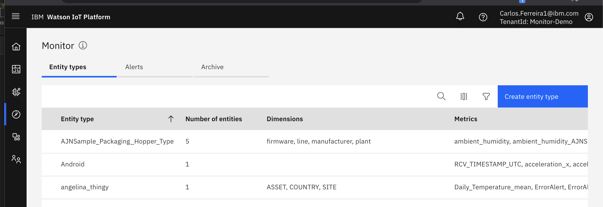 - Click on
<your last name>_thingyrow in the table for your entity type 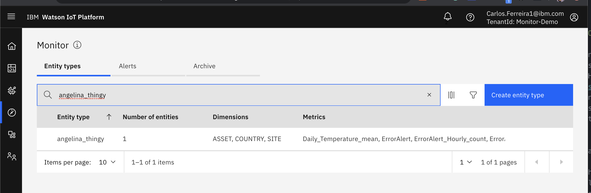 - Since you only have one device for Thingy Entity Type
<your last name>_thingy, only one entity is listed on theDashboardstab in theInstance Dashboardtable onEntities Typepage for your Entity Type. As you add more devices to the<your last name>_thingyDevice Type in the IoT Platform they will appear on the entities page. Any entity can be an asset, an IO Point, a system of assets or what ever you choose.
(Note: You will not see the Hourly summary dash board just yet) 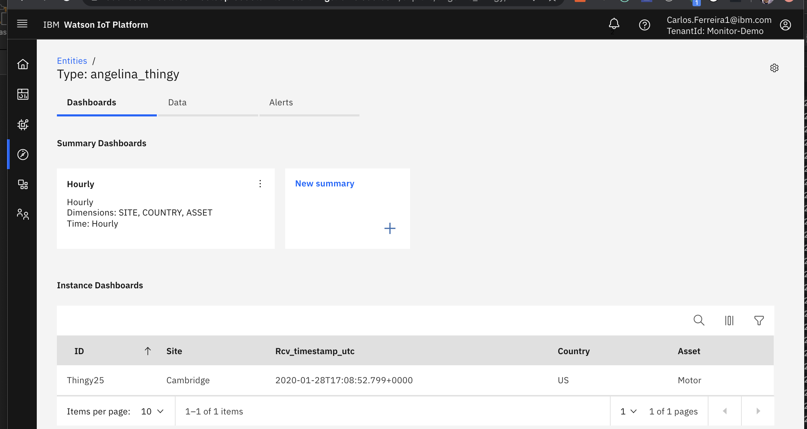 - Click on the
DataTab and expandMetricsto see all the aggregated metrics across all your devices like the max and min values for time series float data. - Scroll down a bit to view the metric charts for
co2,pressureandtemperature. Click onco2to see its max an min over time aggregated across all entities in<your last name>_thingyEntity Type.
(Note: you might only see the Metric part now, the other parts will turn up later as you work through the exercises) 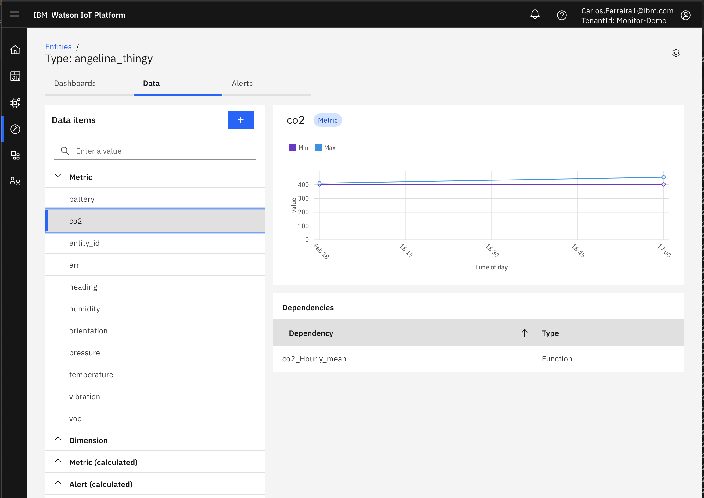 - Click the
Dashboardstab to return to see the list ofEntitiesin theInstance Dashboardstable. - Select your Thingy entity listed in the
Instance Dashboardstable. Now you only see the data for this specific asset. TheDimensionstab shows the meta data used to classify your asset.
(Note: you might only see the Name dimension, but you will learn to add dimensions later)
- Click
Metricstab to see metrics for the last 24 hours for this entity (asset) only. It may take some time to accrue enough data to visualize, take a break and return after ten or so minutes. 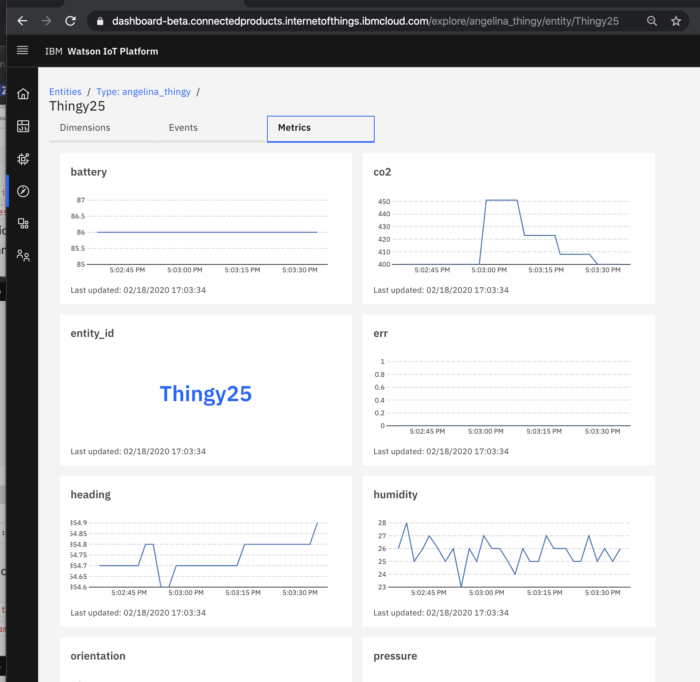
Analyze Data
In the previous exercise you saw how you can see the raw device data in Monitor Dashboards, in this exercises you will learn how to perform data analysis and transform data so that remote operations managers can take action using intelligent insights.
- Click
Monitor. Here you can see all of the entity types created from the logical interfaces. An entity is created for each mapped device ID along with it's corresponding properties. - Search for and click on your Entity Type
<your last name>_thingy - Click
Datatab on the homepage for your Entity Type. - You can start tracking the mean of the entities across your Entity Type by creating a calculated metric from the Function Catalogue.
- Click
+button to access the Function Catalog. 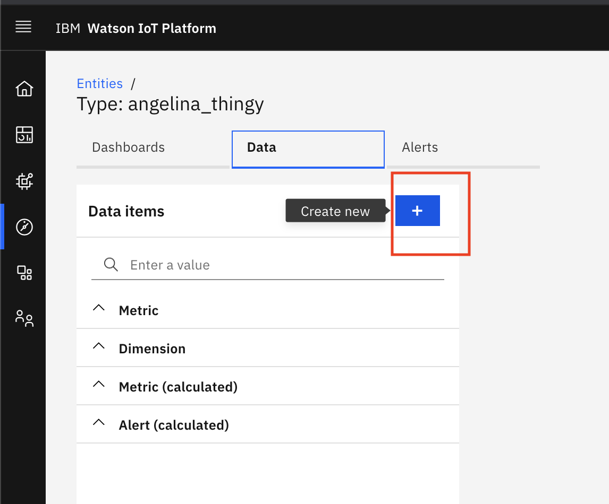 - Search for the
Meanfunction in the catalog. Click on it and clickSelect. 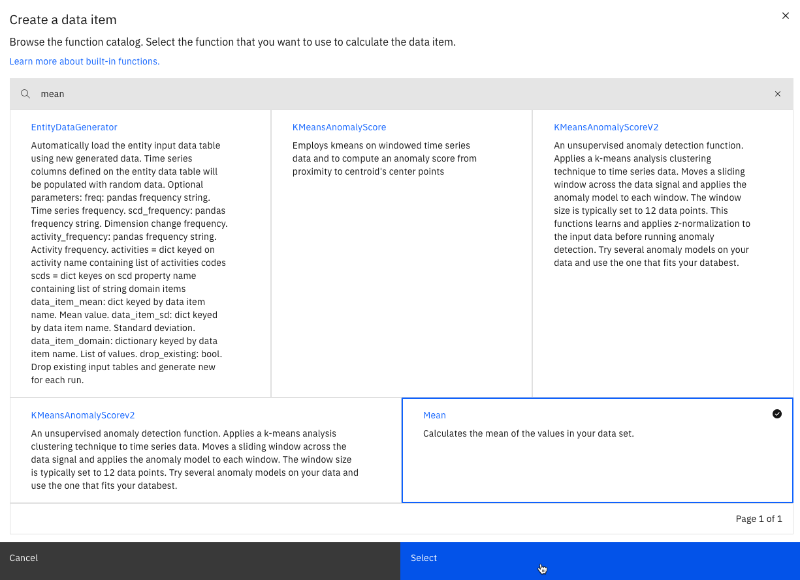 - In the next dialog, select the metric that you want to calculate the daily mean for. In this case,
temperatureand clickNext. 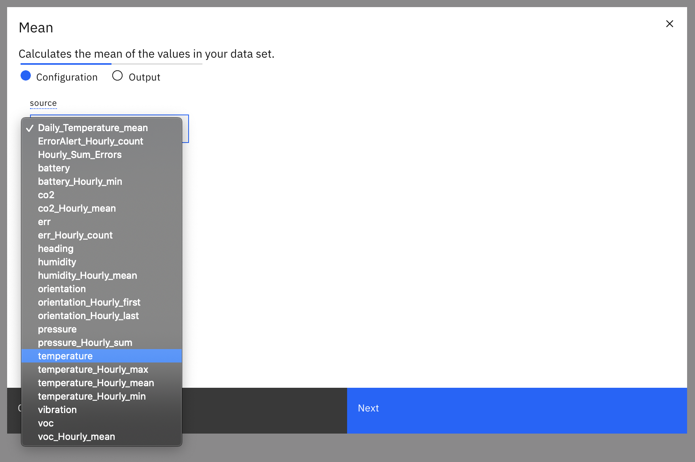 - Since temperature is changing and recorded over time you need to specify what time period the mean is being calculated for. This is called the granularity and you can leave it set to
Dailyto calculate the daily mean. 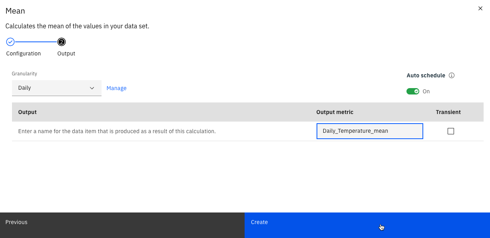 - Replace the calculated
Output metricname with your own likeDaily_Temperature_Mean - Leave everything else as default and click
Createto save the metric. This calculated metric is calculating a daily mean. If you wanted to calculate anHourly_Temperature_Mean, you can set theGranularitytoHourlyon the output dialog. - You should now see your new calculated metric in the Metric (calculated) list on the left-hand side. If not, then wait 5 minutes and refresh the page. 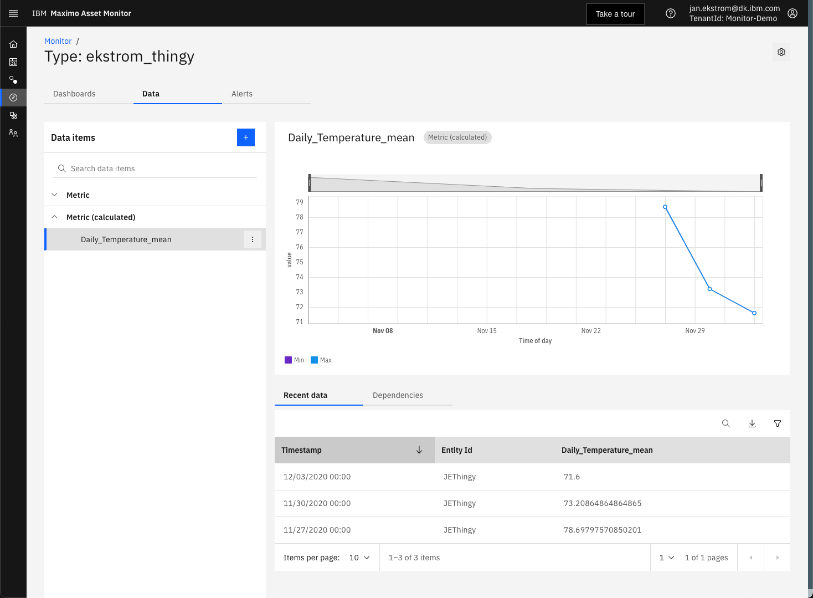
- Click the
Configurebutton to update calculated metrics. 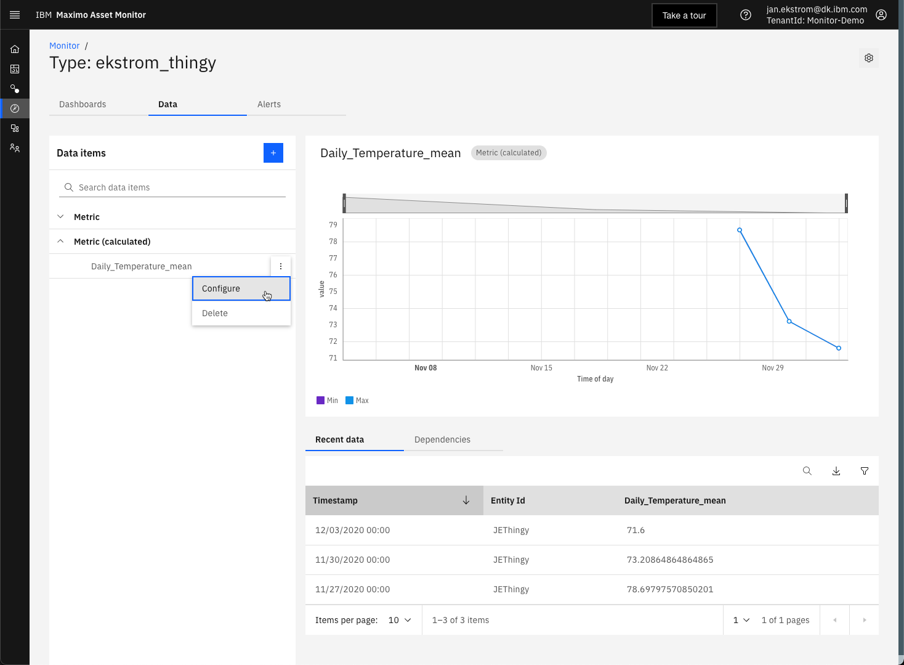 - Click
Nextand click on theAuto scheduleswitch to change the schedule of how often the mean is calculated. You can change the frequency of how often daily mean is calculated changing it from every 5 minutes to every hour. You can also change how many days back the mean temperature function should calculate for using historical temperature data.
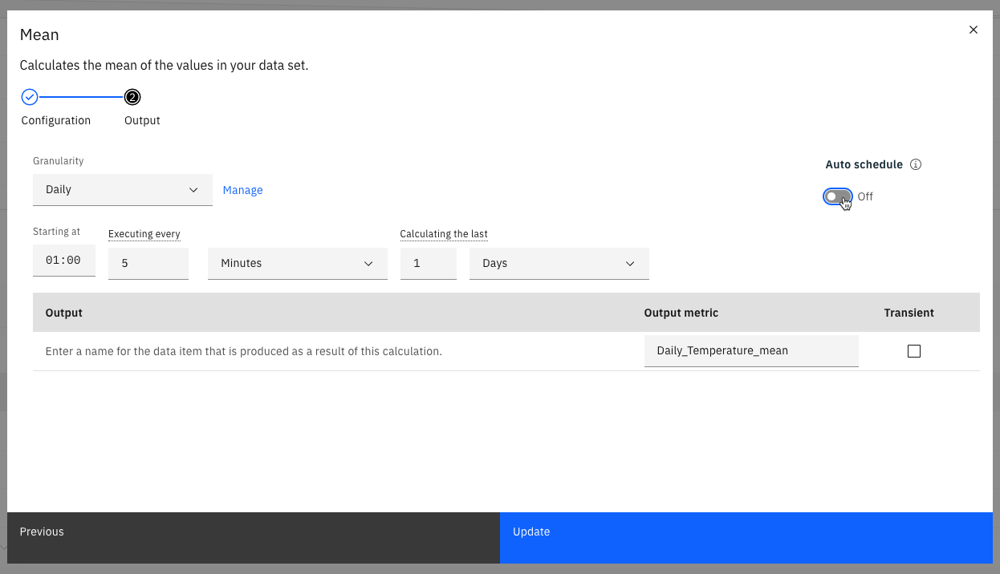 -
Click
Updateto save your function configuration changes. -
Create a new calculated metric that calculates the number of errors every hour. Start by clicking the
+button. Find theSumfunction in function catalog and clickSelect. 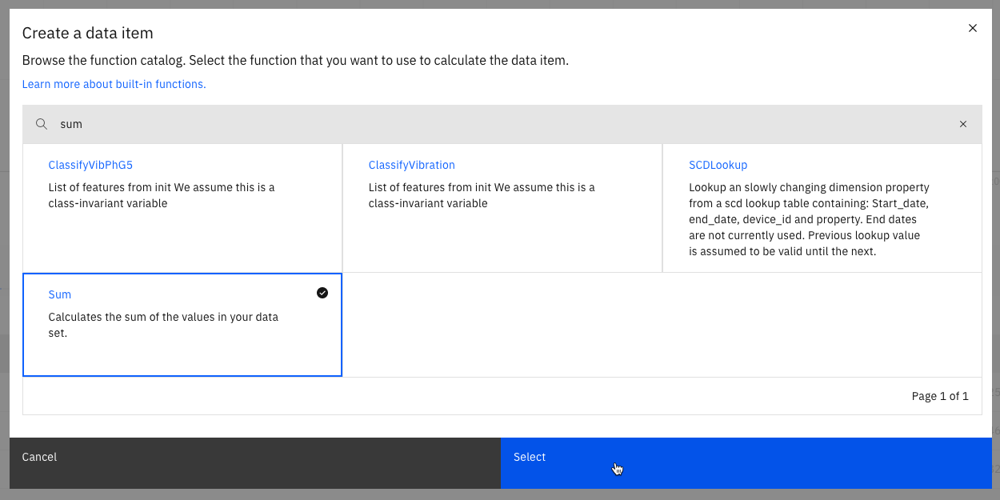 - In the following dialog, select the metric
errin the source field, leave everything else default and selectNext.
In the output dialog, you can create a new granularity by clicking theManagebutton. 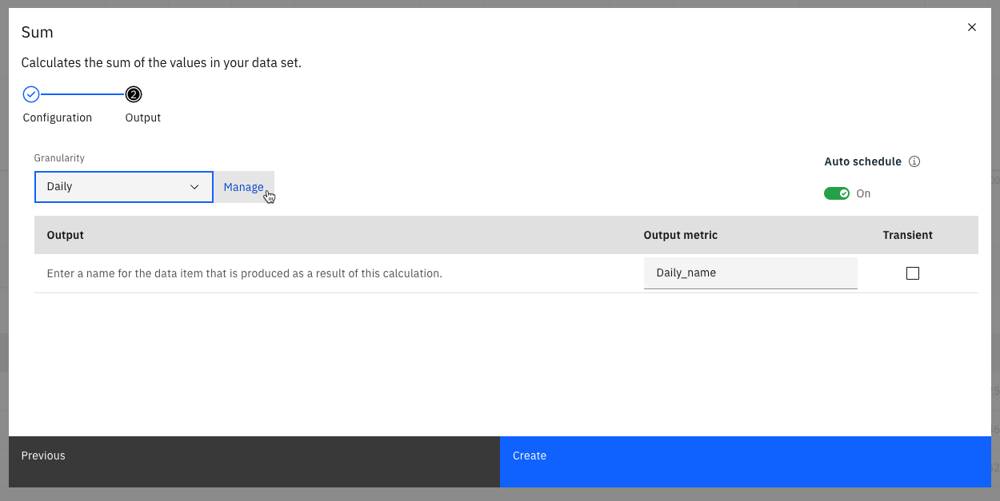 - In the Create custom grain dialog, name the custom grain
Hourlyand selectHourlyfrom theTime basisdrop down. Leave everything else default and click “Create.” 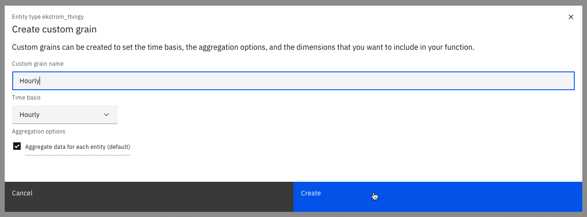 - Name your new calculated metric
Hourly_Sum_Errorsand clickCreate. 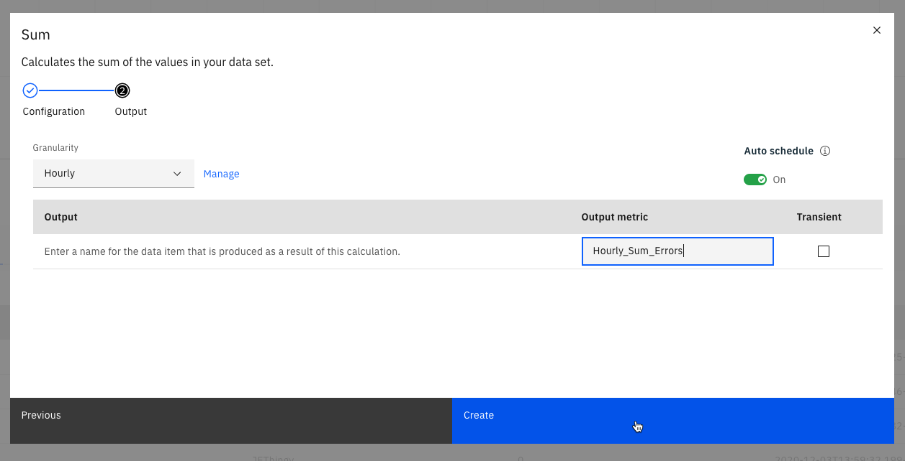 - Flip your Nordic Thingy over once in a while to generate errors and after five minutes you should start to see data in the chart. 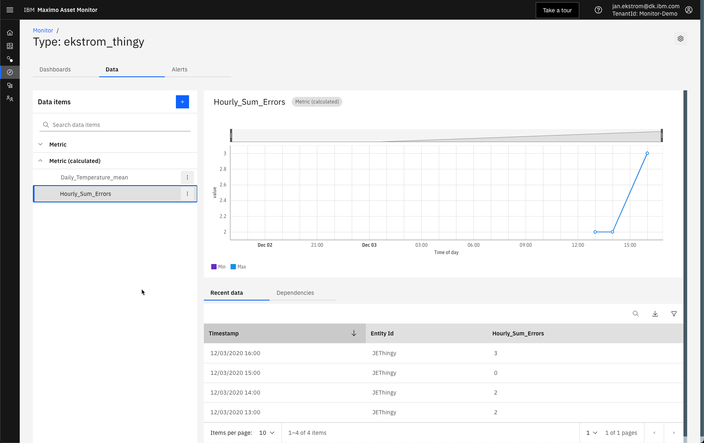
Congratulations. You have learned how to view the metrics of your entities as well as create new calculated metrics from that data. Just like metrics, the calculated metrics are also stored in the data lake. Open and view the DB2 database tables like we did in Exercise 1 (Monitor Page > Usage > Db2 Warehouse on Cloud > Launch > Data > Tables > BLUEADMIN).
Once the list of schemas are populated, you'll find that the Analytics Service has created new tables, one for each time grain - search for the name 'DM_
Note: Calculated functions by default are scheduled to run every 5 minutes. Check back later to see if the metric is being calculated.
Alerts
In this exercise you will learn how to create alerts. Alerts are functions in the Maximo Asset Monitor catalog that can be configured to notify you that certain asset conditions require attention. There are a many types of alert functions included in the catalog like High, Low andAlert Expression Filter. Like other functions in the catalog, these alerts can be scheduled to run every five minutes or less frequently. This is unlike Actions in the IoT Platform Service where notifications are invoked immediately when event data is ingested. Actions have an application programming interface to integrate with other systems. You can also create and register your custom functions in the Maximo Asset Monitor catalog. Both of these are advanced topics that are beyond the scope of this Exercise. You can learn more about how to create custom functions in Maximo Asset Monitor by following this tutorial.
- Use what you learned in the previous exercise to create a calculated metric named
Hourly_Sum_Errorsto sum up all the alert errors created by turning your Nordic Thingy up side down using theSumfunction in the Catalog. Now you will create an alert to be notified when the hourly sum of errors exceeds 5 using the instructions below. - Configure an alert using the value of
Hourly_Sum_Errors(calculated metric) created in the previous step.
- Click
+button access the Function Catalog. 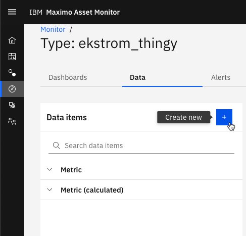 - Search on
alert - Select the
AlertExpressionfunction and then clickSelectbutton. 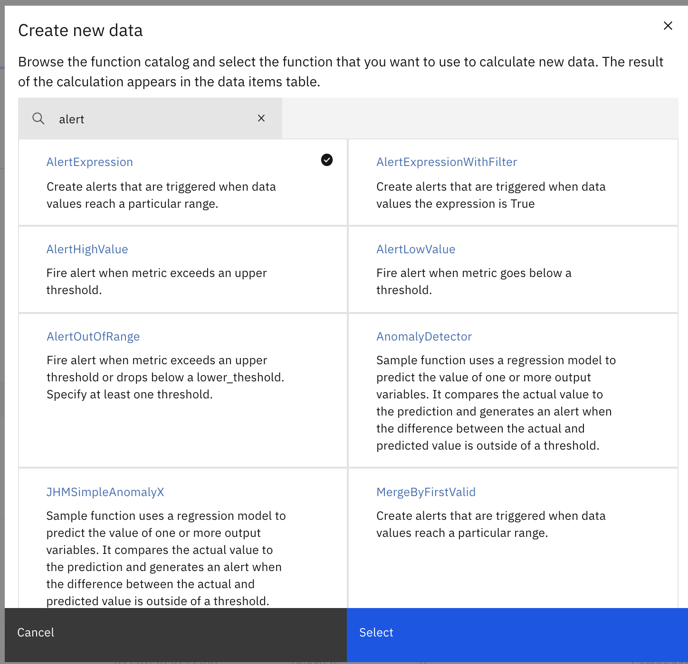 - Configure the alert to trigger an alert when the value of
Hourly_Sum_Errorsexceeds 5 errors. It will require investigation of the errors. Monitor uses Python for its expression language using the expressiondf['metric-name'] - Set Alert Expression
expressionvalue todf['Hourly_Sum_Errors']>5 - Set Alert Expression
Severityvalue toHigh - Set Alert Expression
Statusvalue toNew. Alerts start in state ofNewuntil they areAcknowledged,Validatedand finallyResolvedorDismissed. Click the Next button.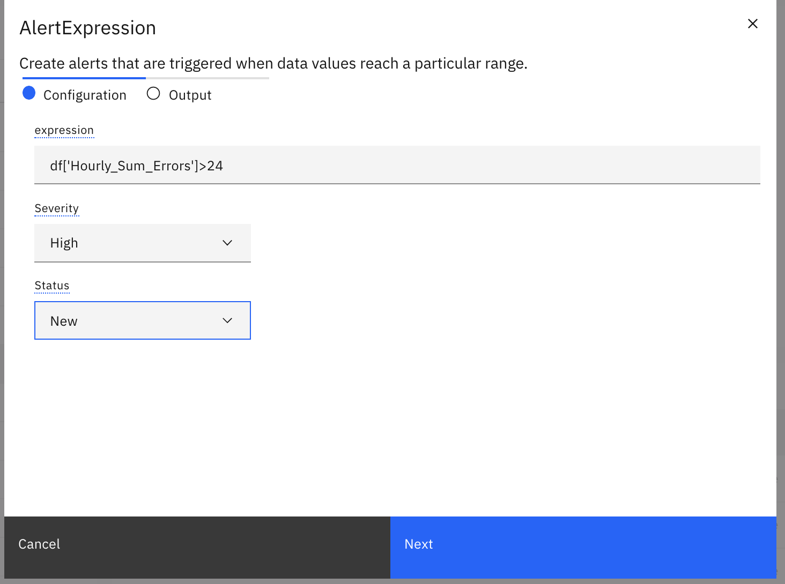 - Name the alert
Hourly_Sum_Errors_Alertand click the Create button. 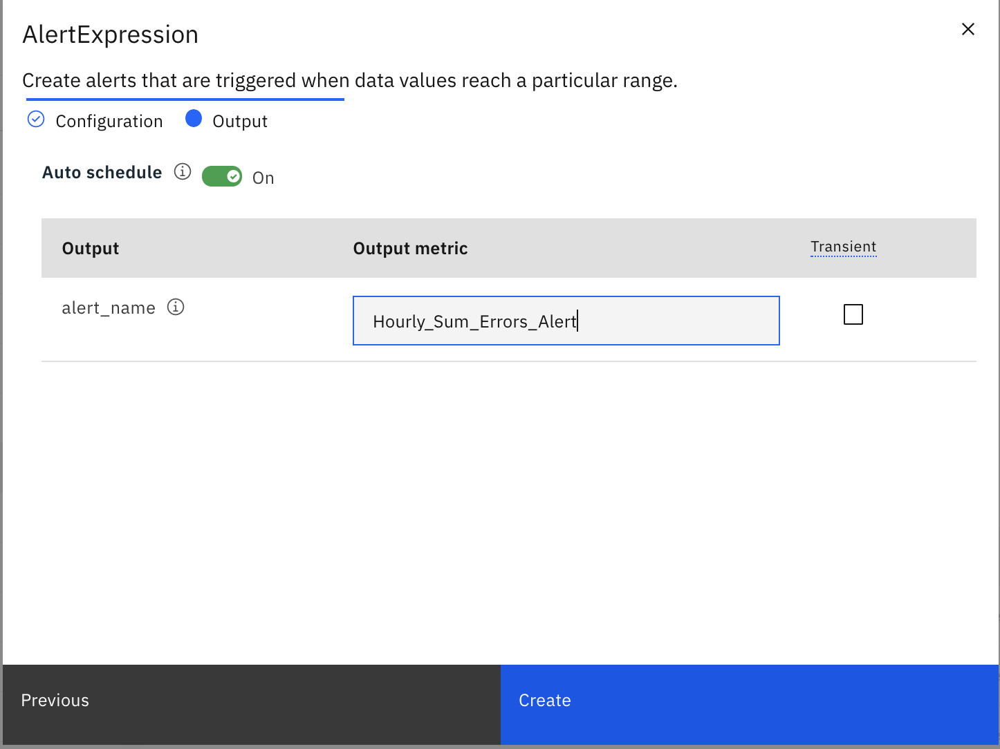 - The Monitor pipeline runs every 5 minutes. If you have flipped over your Thingy more than five times, you should see the alert show up on the chart in about five minutes. 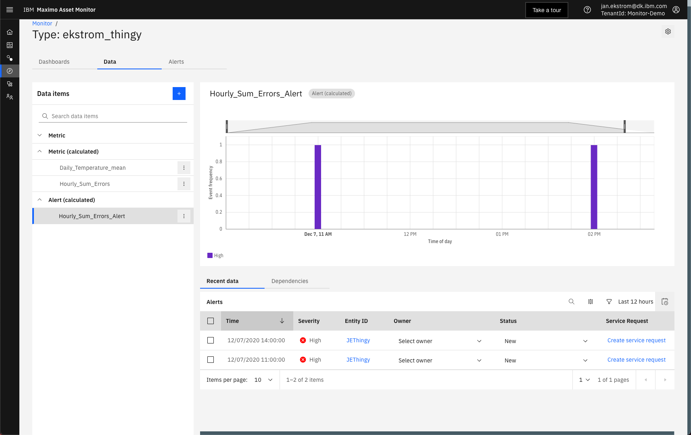
- You can also watch all alerts for this entity type by selecting the Alerts tab. 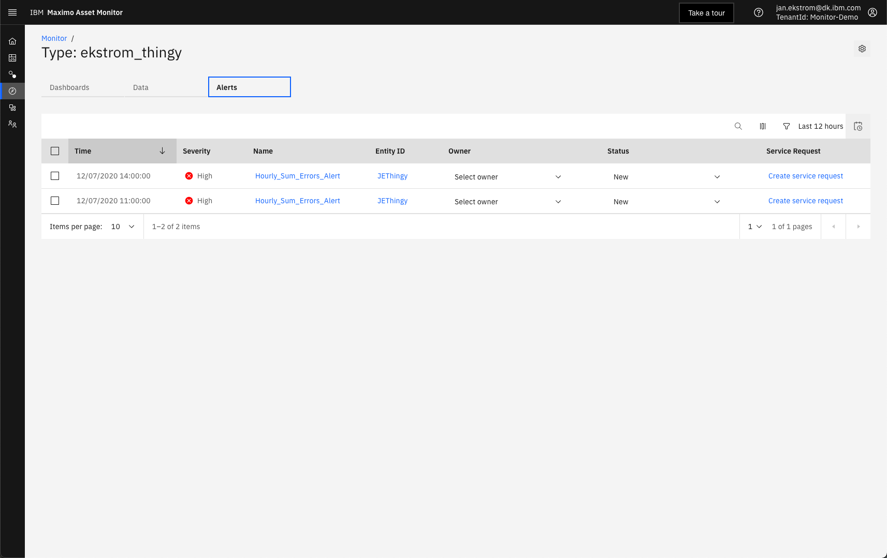
Congratulations. You have learned how to create new Alerts from a calculated metric that sums the total number of errors that occur on an asset device. You can also receive alerts on a device event stream topic and take action. That is beyond the scope of these materials. Find out more information on how to configure these actions in the documentation.
Troubleshoot Functions
- Should you see
Analysis Stoppedwarning this means your pipeline for your entity type has stopped calculating your metrics. You should click onAnalysis Stopped red dotto view the error details.
- These warnings often occur because a calculated metric function input argument depends on a metric name that has been deleted or whose name has changed.
- Click on
Search glassicon in the data field to find the metric name that is causing the problem. Make sure it exists or choose the new metric name in the calculated metric that uses it.